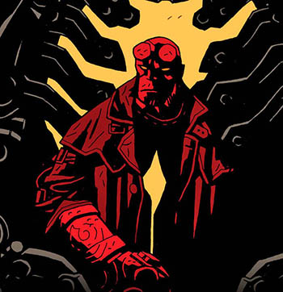
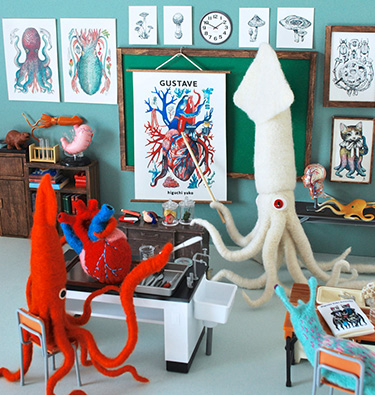
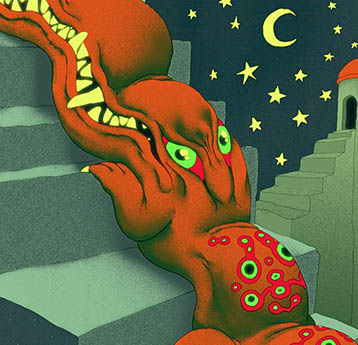
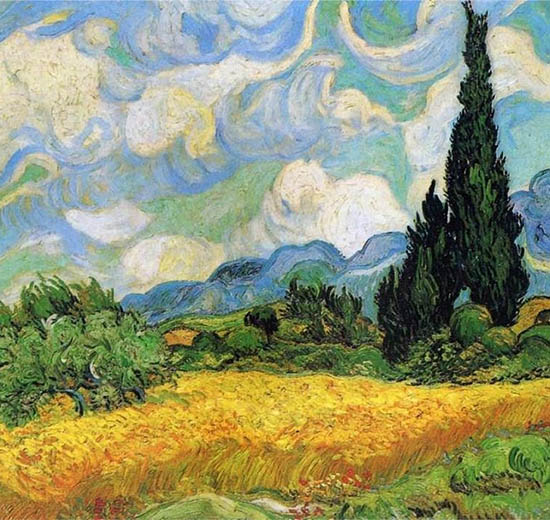
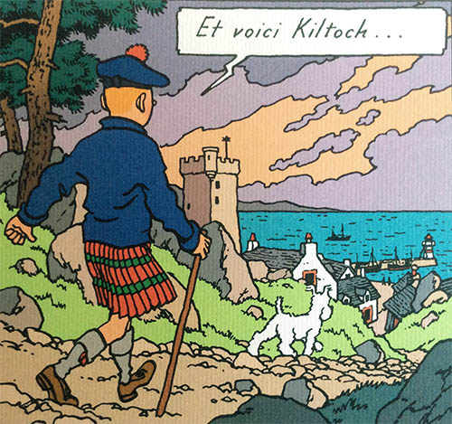
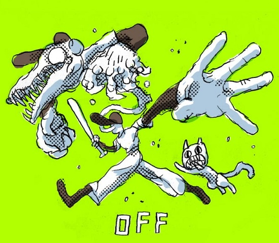
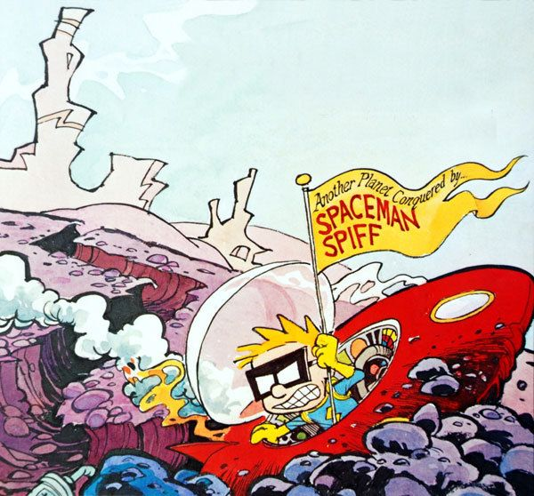
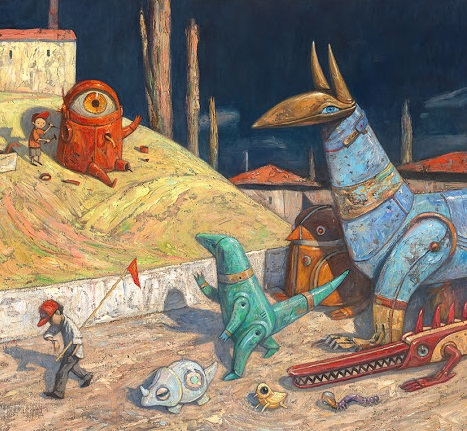
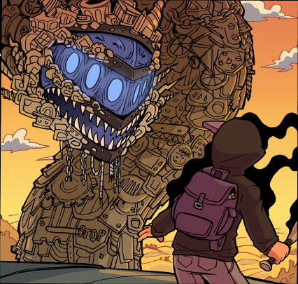

Mike Mignola
Supernatural gothic comics with vivid lighting and masterful use of black.

Hine Mizushima
Needlefelts and miniatures which make invertebrates and anatomy adorable.

Felix Colgrave
Pastel animations of bug-eyed, Boschian creatures in surrealist landscapes. Feels like folk art from a nonexistent culture.

Van Gogh
You've heard of this guy. Bold brushwork. Dynamic pastel landscapes and portraits in nonliteral color.

Hergé
Pioneer of the ligne claire style. Everything is simple, but beautifully real. I began drawing by tracing Tintin books.

Mortis Ghost
Comic artist who made a game you may have heard of. Liquidy, loose, surreal drawings with themes teetering between horror and childish fun.

Bill Watterson
Angular, organic lines with heavy stylization and not a right angle in sight. Fantastic watercolors, too.

Shaun Tan
Wonderfully realized fantasy worlds with a lot of texture. If Kafka did friendly children's illustrations, maybe.

Zack Morrison
Webcomic artist. The marriage of western and anime comic styles results in crazily expressive characters.
(Artists with their own blurb are artists who were directly formative to my art style or I've tried to emulate; artists below are just people who do cool work that you might want to check out.)